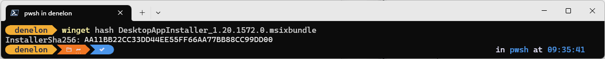
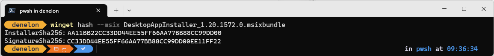
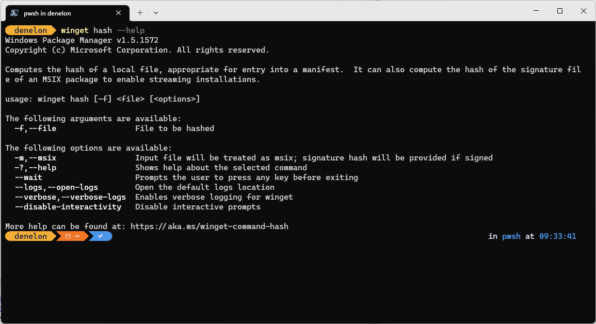

hash command (winget)
The hash command of the winget tool generates the SHA256 hash for an installer. This command is used if you need to create a manifest file for submitting software to the Microsoft Community Package Manifest Repository on GitHub.

In addition, the hash command also supports generating a SHA256 certificate hash for MSIX files.

Usage
winget hash [--file] <file> [<options>]
The hash sub-command can only run on a local file. To use the hash sub-command, download your installer to a known location. Then pass in the file path as an argument to the hash sub-command.

Arguments
The following arguments are available:
| Argument | Description |
|---|---|
| -f,--file | The path to the file to be hashed. |
Options
The options allow you to customize the hash experience to meet your needs.
| Option | Description |
|---|---|
| -m,--msix | Specifies that the hash command will also create the SHA-256 SignatureSha256 for use with MSIX installers. |
| -?, --help | Gets additional help on this command. |
| --wait | Prompts the user to press any key before exiting. |
| --logs,--open-logs | Open the default logs location. |
| --verbose, --verbose-logs | Used to override the logging setting and create a verbose log. |
| --nowarn,--ignore-warnings | Suppresses warning outputs. |
| --disable-interactivity | Disable interactive prompts. |
| --proxy | Set a proxy to use for this execution. |
| --no-proxy | Disable the use of proxy for this execution. |